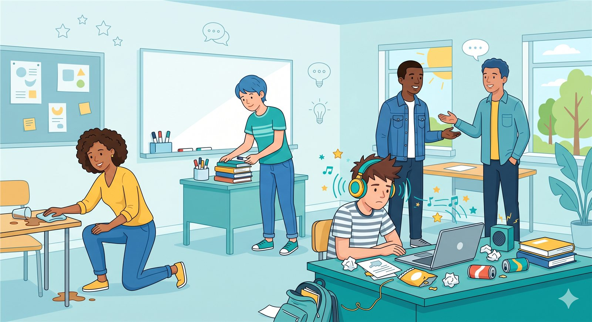

Intermediate English · Unit 1
Personality and Annoying Habits
In this lesson, students learn how to describe people’s personalities and talk about everyday habits that can be positive, neutral, or annoying.
Learning Outcome: To describe people’s personalities using descriptive adjectives, habit expressions, and clear examples.

What is personality?
Personality is the combination of qualities that describe how a person usually thinks, feels, and behaves. When we describe personality, we often use adjectives such as helpful, selfish, considerate, friendly, quiet, rude, generous, lazy, or responsible.
Personality describes what a person is like
We use personality adjectives to explain a person’s character, attitude, or usual way of behaving.
Good descriptions need examples
A strong description does not only say the adjective. It also explains the behavior that shows that personality trait.
Descriptive adjectives
Descriptive adjectives help us explain personality. Some adjectives are positive, some are negative, and some depend on the situation.
Positive adjectives
- helpful
- considerate
- friendly
- amicable
- responsible
- generous
- patient
- respectful
- organized
Negative adjectives
- selfish
- rude
- annoying
- irresponsible
- messy
- loud
- careless
- impatient
- lazy
Context-based adjectives
- quiet
- serious
- talkative
- independent
- confident
- sensitive
- reserved
- curious
- direct
How to describe personality politely
When describing people, it is important to sound respectful. In English, we often use softer expressions to avoid sounding too direct or rude.
Basic structures
He / She is very + adjective.She is very friendly.
He / She is not really + adjective.He is not really selfish.
He / She can be a little + adjective.She can be a little impatient.
Softer descriptions
Once you get to know him/her, he/she is very + adjective.She’s very amicable once you get to know her.
He / She can be..., but...He can be quiet, but he is very kind.
Although he/she is..., he/she is also...Although she is serious, she is also very helpful.
Habit expressions
Habits describe what people usually do. We can use frequency adverbs and special expressions to talk about repeated behavior.
| Expression | Use | Example |
|---|---|---|
| always | For actions that happen very frequently. | He always helps his classmates. |
| usually | For actions that happen most of the time. | She usually listens carefully. |
| often | For actions that happen many times. | He often cleans up after dinner. |
| sometimes | For actions that happen occasionally. | She sometimes forgets to answer messages. |
| has a habit of + verb-ing | For a repeated behavior that is noticeable. | He has a habit of leaving his things everywhere. |
| is always + verb-ing | Often used to complain about repeated annoying actions. | My roommate is always playing music loudly. |
Annoying habits
Annoying habits are repeated actions that bother other people. In English, we often use always + verb-ing when we want to complain about repeated behavior.
Personality vs habits
Personality describes what a person is like. Habits describe what a person usually does. A good description often connects both ideas.
He is considerate.
This describes his character. It means he thinks about other people’s feelings or needs.
HabitHe always cleans up after himself.
This describes a repeated action that shows he is considerate.
She is irresponsible.
This describes her personality in a negative way.
HabitShe never arrives on time.
This describes a repeated action that supports the description.
Useful language
These expressions help you describe people naturally, especially when you want to balance positive and negative ideas.
To add contrast
- but
- however
- although
- on the positive side
- at least
Examples
- He is messy, but he is very friendly.
- She can be loud sometimes. However, she is very generous.
- He is always complaining. At least he is honest.
- Although she is quiet, she is very kind.
Think about it
Think about someone you know. What personality adjectives describe this person? What habits does this person have? Try to describe the person with both an adjective and a specific example.